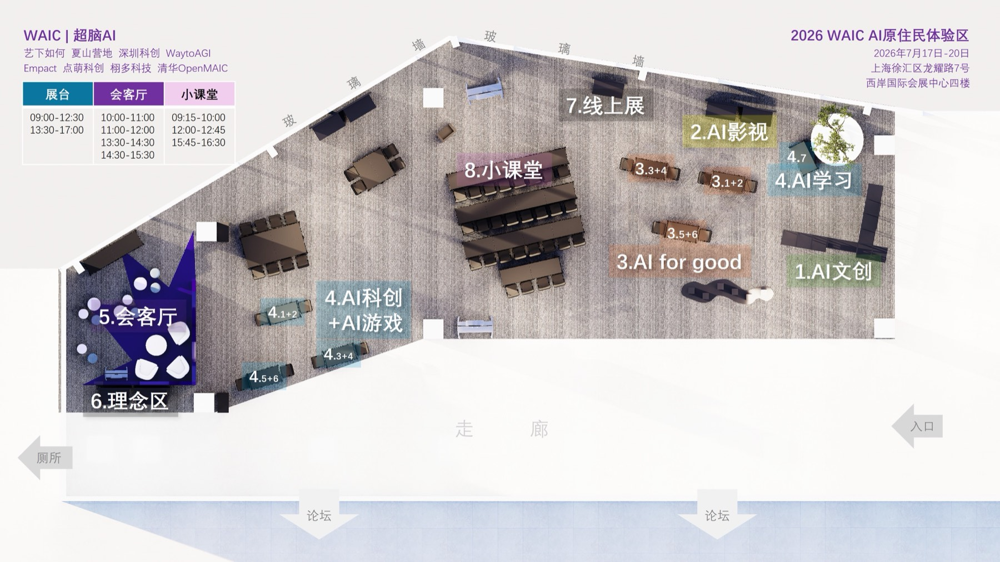
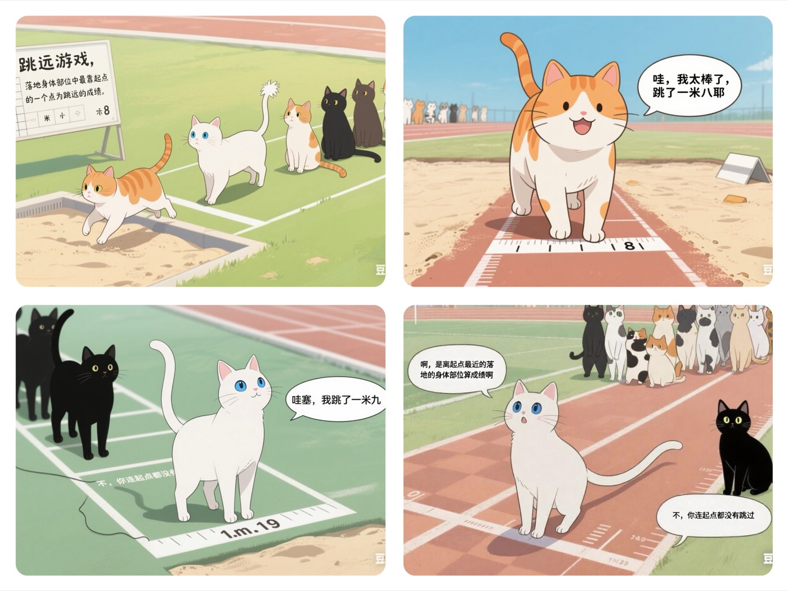
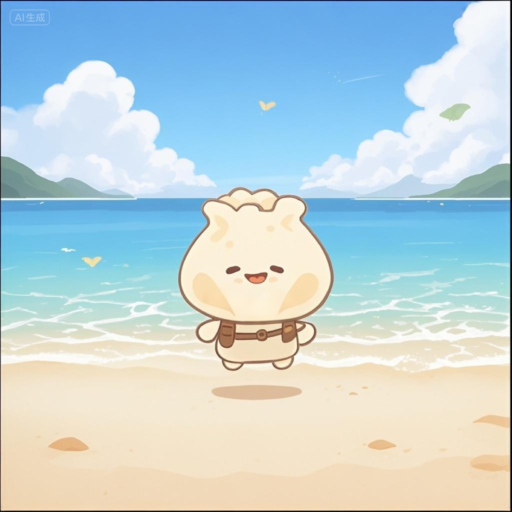
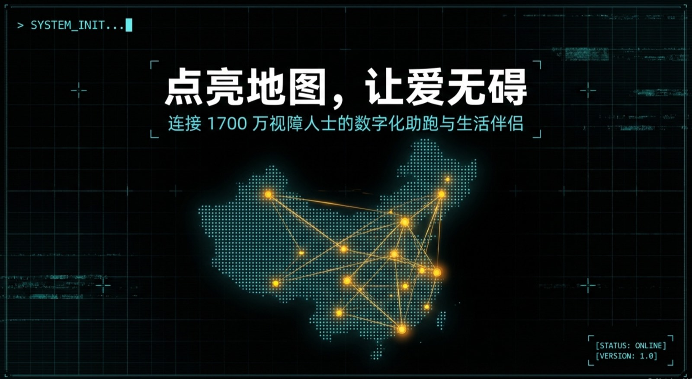
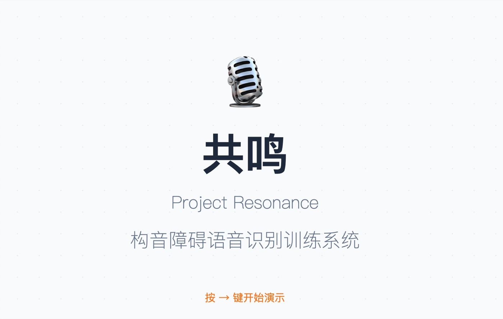
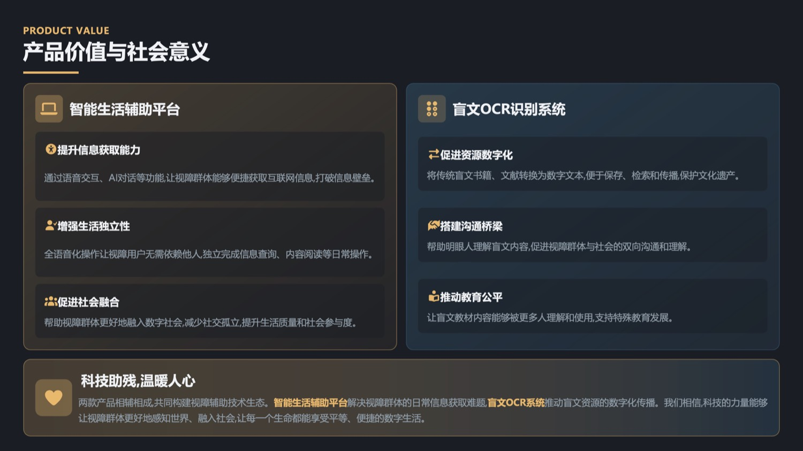
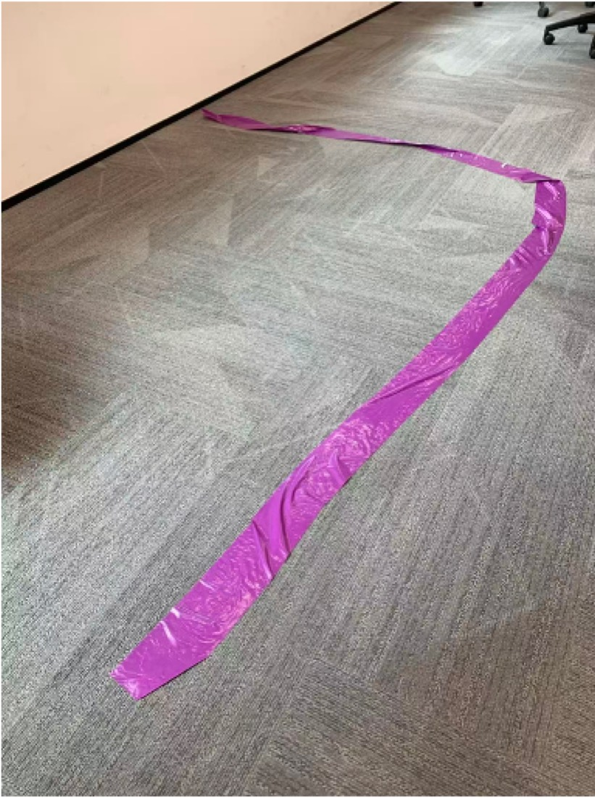
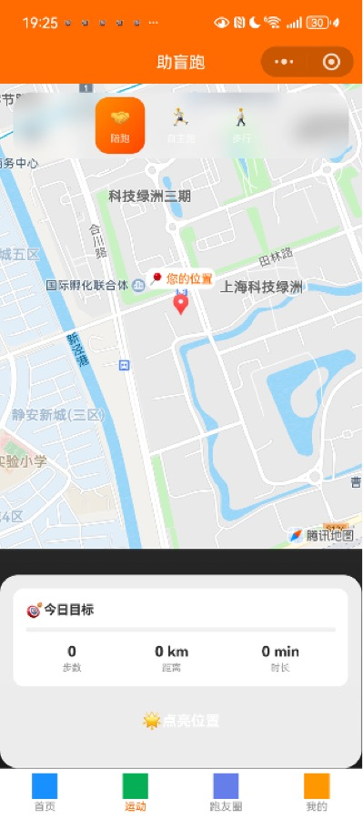

47
青少年 AI 项目
12
来自城市
14
平均年龄（岁）
10
最小年龄（岁）
45+13
会客厅场 + 小课堂项
现场导览 · 展区平面
到了西岸，往这几个区走
整个「AI 原住民体验区」按 8 个区块划分：AI 文创、AI 影视、AI for Good、AI 科创 + AI 游戏、AI 学习、会客厅、理念区、线上展。对着这张平面图，找你想看的项目。

🔍 点击查看大图
·
AI 原住民体验区 · 西岸国际会展中心四楼（北门四楼「未来科技体验场」）
重点 · AI 原住民体验计划
不是技术展示，是一代人的登台
超脑在 WAIC 的核心叙事：这不是又一场技术秀，而是这一代「AI 原住民」——出生在 AI 时代、把 AI 当母语的 10 后——第一次站上世界舞台，展示他们用 AI 回应真实世界问题的作品。
开幕主旨演讲
「AI 原住民体验计划」主旨演讲
「我们不是来展示技术的，是来让世界看见——这一代 AI 原住民，正在用 AI 回应真实世界的问题。」
产品层
真实解决问题的 AI
每个项目都指向一个真实的社会问题——从人工耳蜗辅助到无障碍出行，AI 是回应世界的工具，不是炫技的玩具。
人物层
10 后创作者的故事
平均 14 岁、最小 10 岁的创作者，来自全国 12 城。他们为什么做、怎么做、想帮谁——每个项目背后都是一个人的故事。
社会层
AI 时代培养什么样的人
当 AI 成为基础设施，教育要回答的不再是「学什么技能」，而是「成为什么样的人」。这是超脑想和世界讨论的问题。
「超脑不是培训机构，我们是中国青少年 AI 创作者的发现者和连接者。把舞台交给孩子，世界会看见他们的答案。」
—— 王佳梁 Michael，超脑 AI 孵化器创始人
线上特别展
生命力博物馆 · WAIC 特别展
AI 十天搭建 · 人文策展
把学员的作品与故事，搬进一座会呼吸的线上博物馆
「生命力博物馆」由超脑成员月亮（张婵媛）在没有技术背景的情况下，用 AI 十天搭建而成，呈现超脑青少年学员的 AI 作品与创作故事。它是这次 WAIC 现场展的线上延伸，随时随地可逛。
进入线上特别展 →
vitality-museum.wexiyi.com/waic
现场议程 · 7/17 – 7/20
超脑展台活动议程
「青少年会客厅」20 分钟一档、共 45 场现场访谈；「超脑小课堂」含主旨演讲、思辨会、特别展发布、颁证与 AI for Good 论坛，共 13 项。按日期切换查看。
🔒
为保护未成年人隐私，本页仅展示项目名称、展位与所属机构，不公开学员姓名。现场以统一海报口径为准。
入选项目 · AI for Good
他们想用 AI，帮到具体的人
47 个入选项目里，有一条格外动人的主线：无障碍与公益。这些 10 后创作者，把 AI 对准了那些常被忽略的真实需求。
听障 · 无障碍
回音 Echo · 人工耳蜗术后辅助眼镜
为人工耳蜗术后使用者设计的辅助眼镜，帮助他们把「听」的世界，也「看」得见。
深圳科创学院
视障 · 无障碍
盲人助跑
用 AI 做视障跑者的「陪跑员」，让看不见的人，也能安心迈开脚步奔跑。
超脑 AI 孵化器
视障 · 无障碍
黑暗中的勇气 · 盲人足球
围绕盲人足球的 AI 尝试，让视障球员在赛场上「听」得更清楚、跑得更有底气。
Empact China
陪伴 · 情感
HOLO DORO · 全息智能共养宠物
用全息投影养一只「会陪你」的宠物，回应独处与孤独，也守护一份牵挂。
深圳科创学院
肢体 · 无障碍
无障碍赛车游戏
重新设计操作方式，让身体不便的玩家，也能享受竞速与游戏的快乐。
超脑 AI 孵化器
沟通 · 无障碍
声桥 Echo Bridge
为沟通障碍者架一座「声音的桥」，让表达和被听见，变得更容易一点。
WaytoAGI-EDU
作品掠影 · 往期
超脑学员 AI 作品掠影（往期）
这些是超脑学员在往期活动中做出来的 AI 作品——原创 IP、无障碍产品、构音障碍辅助、视障助跑平台。不是本次 WAIC 的现场项目，而是想让你先感受一下：10 后用 AI，能做出什么样的东西。

长尾喵
AI 原创 IP · 四格漫画

小包子
AI 原创 IP · 亲子形象

助盲跑
视障助跑 · 志愿者匹配平台

共鸣 Resonance
构音障碍 · 语音识别训练

视界无界
盲文 OCR · 视障智能生活
无界
AI 无障碍教学平台

Solo Runner
视障陪跑 · 引导线实拍

陪跑小程序
视障跑者 · 地图导航
ℹ️
以上为超脑往期学员 AI 作品，用于呈现创作风貌，不代表本次 WAIC 现场展出的具体项目。本次入选项目以现场议程与统一海报口径为准。
共同发起
合作机构
这次青少年 AI 特别展，由超脑联合全国多家青少年科创教育机构共同呈现。
超脑 AI 孵化器
艺下如何
夏山
深圳科创学院
WaytoAGI-EDU
Empact China
北京栩多科技
清华 OpenMAIC
点萌科创
现场 · 地点交通
怎么来
地点
上海徐汇 · 西岸国际会展中心
北门四楼「未来科技体验场」
龙耀路 7 号
北门四楼「未来科技体验场」
龙耀路 7 号
地铁
11 号线 龙耀路站 1 号口 出
步行约 600 米
步行约 600 米
开放时间
7 月 17 – 20 日
每天 9:00 – 17:00
每天 9:00 – 17:00